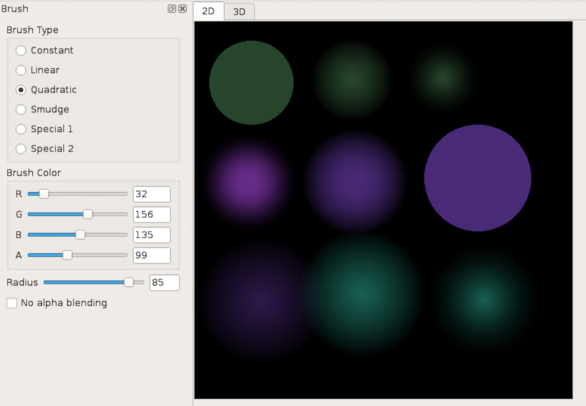
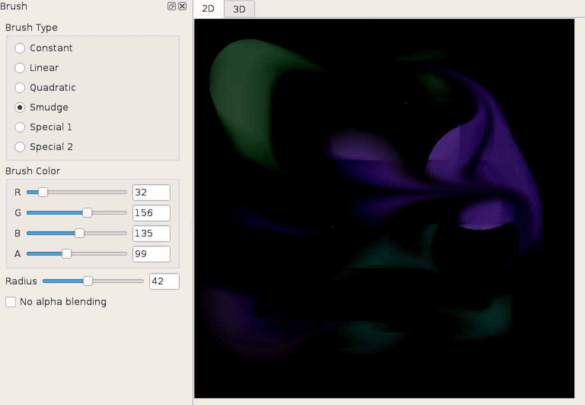
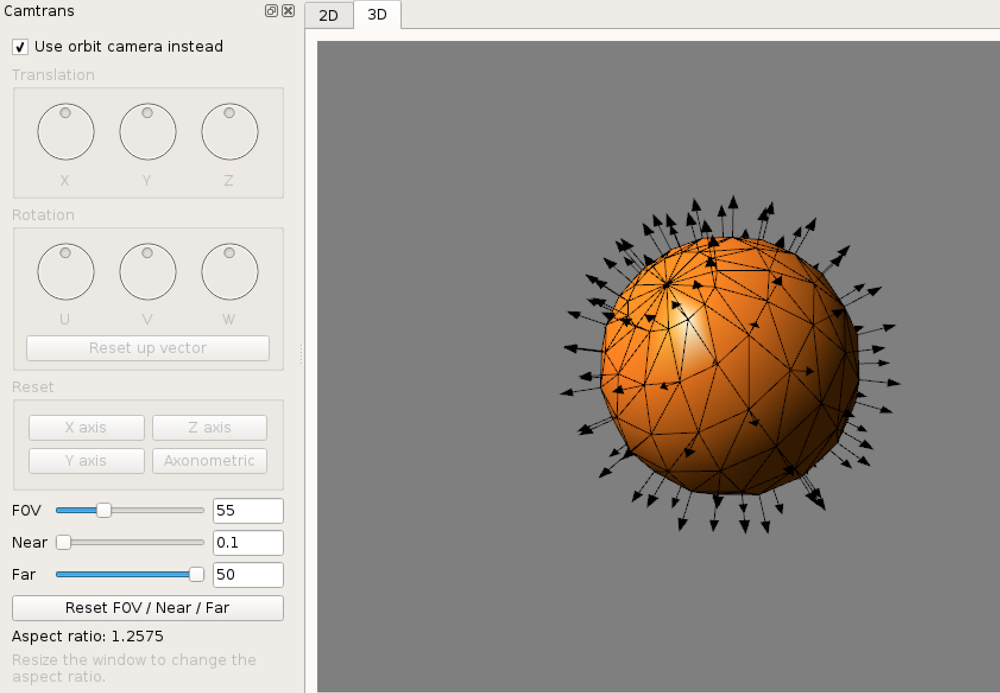
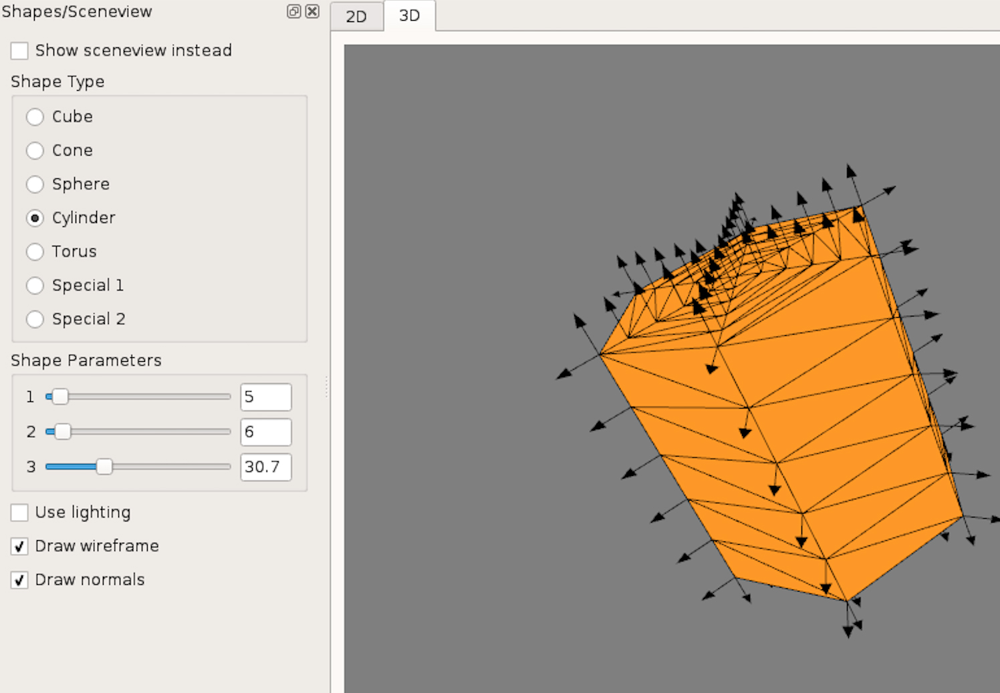
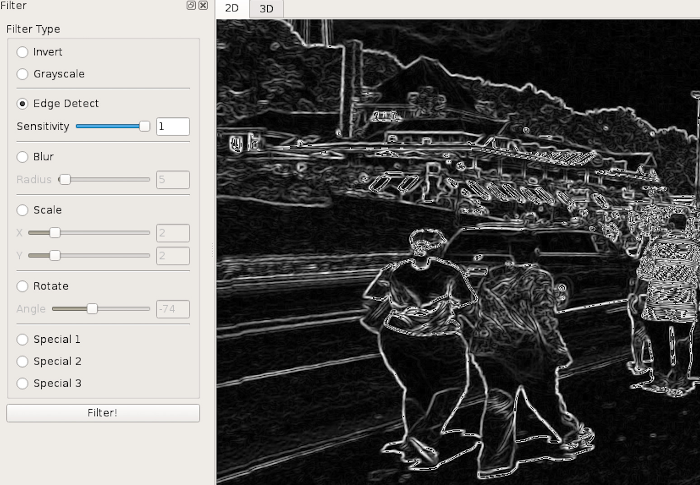
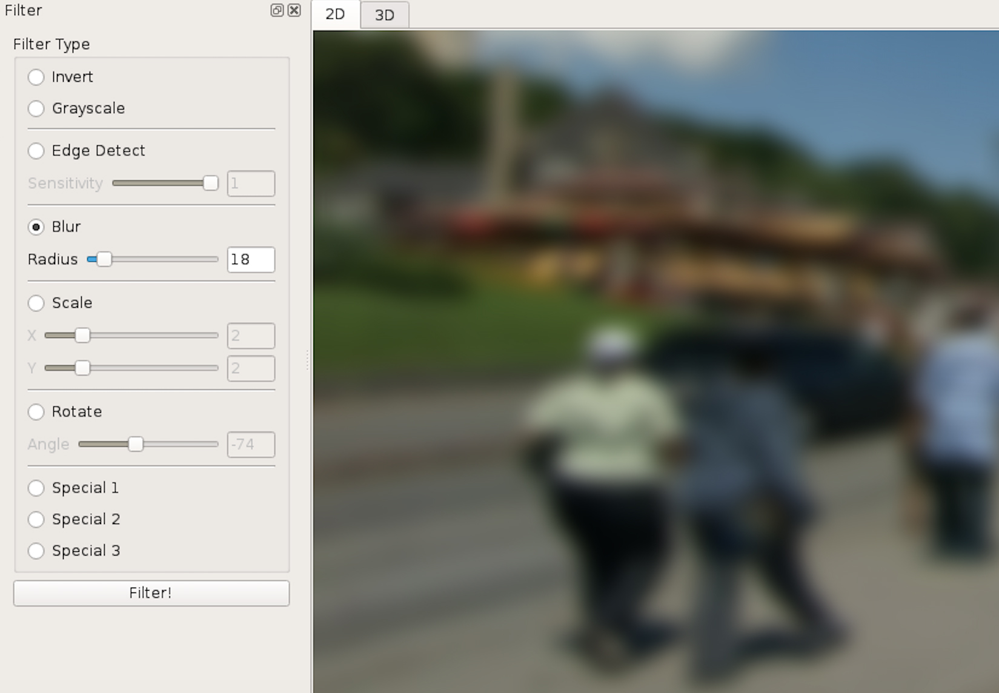

Type: Brush
Description: This is an assignment for the cousre Introduction to computer graphics. I implemented various airbrushes that allow you to paint freely on the digital canvas.
Tools: Qt creator, C++
 Type: Shape, Object tessellation
Description: This is an assignment for the cousre Introduction to computer graphics. I constructed simple 3D objects out of triangles/quads and then displaying them on the screen. I computed and stored the necessary triangles and make OpenGL calls to handle the task of drawing them.
Tools: Qt creator, C++, OpenGL
 Type: Filter
Description: This is an assignment for the cousre Introduction to computer graphics. I implemented different image manipulation operations like edge detection, blur, and image scaling.
Tools: Qt creator, C++
 